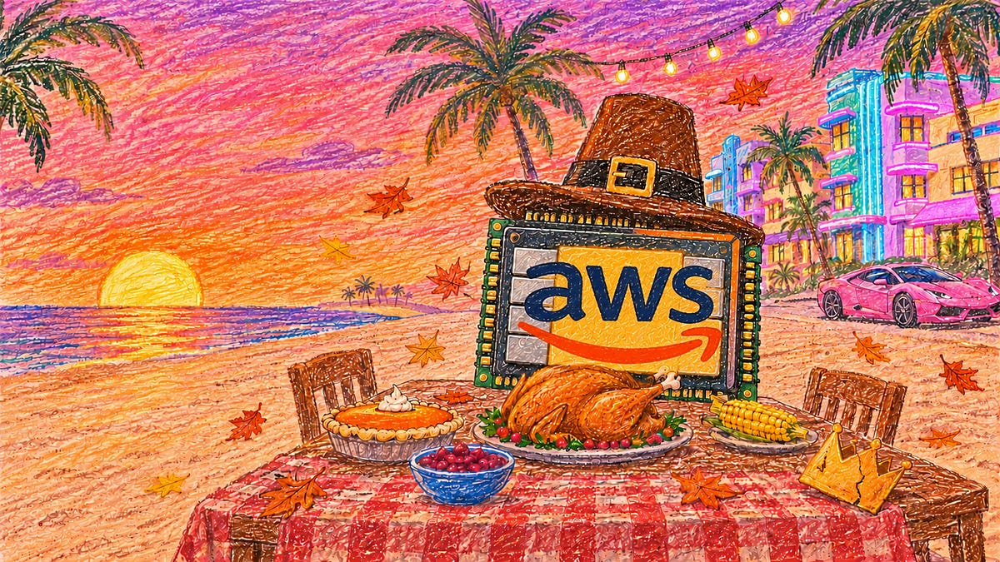

01
SemiAnalysis finds Trainium3 competitive on agentic inference cost

SemiAnalysis benchmarks AWS Trainium3 using replayed coding-agent sessions and a detailed microarchitecture study. Its analysis reports strong performance per total cost of ownership with vLLM, while identifying time-to-first-token cases where GB300 remains faster. The article ties the results to memory bandwidth, prefill/decode separation and chip-level communication. Its margin estimates depend on explicit pricing and utilization assumptions, so the useful takeaway is workload-specific comparison across latency, throughput and cost rather than a universal hardware ranking.